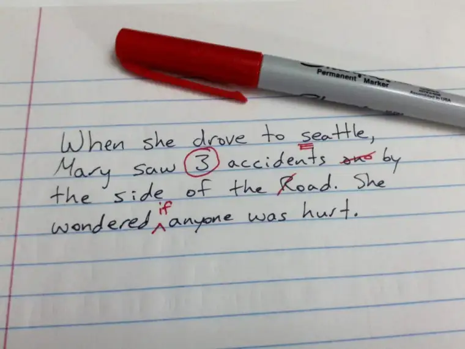

This past Saturday, my latest newspaper column, Living Faith, came out, as it does every other Saturday. This time around, Saturday happened to be my son’s birthday, along with the soccer-season launch, a day after tennis-season launch, and on a weekend we had company.
It was busy. So when the responses started rolling in from my column, I was too absorbed in life to pause for too long. After all, my son wanted me to check out his backflip on the trampoline at Sky Zone, then find out what time the movie that the boys wanted to see was running, and eat some birthday treats.
Only when my responsibilities quieted did I really have a chance to notice that a few negative responses had slipped in among the more positive, early ones. And over the course of the next 24 hours, I found myself in the middle of a firestorm. Apparently, my column had hit a nerve. And in hindsight, it wasn’t hard for me to see what I’d done to help cause the frenzy.
It really comes down to having left out a word or two. And while I regret that now, of course, I also know that writers are human. Every newspaper in every city has a section where corrections are made, and one seems merited now. So if you’ll allow me, I’d like to get out my red pen and give it a try.

Indeed, rather than continue to chase all the emails and Tweets, I’m going to try streamlining things here, so I can return to my regularly scheduled program with my family. I have laundry to fold, after all, and while it would be great to address each email as I’ve always done in the past, this time it’s just not possible.
So here’s the column that set off the barrage of responses. The title: “Can those without God be grateful guests?”
I wrote the headline that way on purpose. I wasn’t wanting to answer the question definitively. It was a curiosity, and I had hoped that in asking it, I could maybe somehow close the gap between the believer and the non-believer. That was the hope, anyway. But my hope backfired.
Instead, based on the majority of responses, it seems to me that many readers read the headline and concluded right off that I was giving an emphatic “No.” And from what I can tell, that is at the crux of the angry comments I have received since the column ran.
The truth of the matter is that I actually believe the answer is “Yes.” On a natural level, I believe that everyone, without exception, has the capacity to love and feel love, to be generous, to be kind, to be a gracious guest and a hospitable host. Maybe we’d find the rare exception — someone who simply cannot feel at all. But most of humanity has this ability, and at least tries to follow up on it. And I celebrate that commonality we all have with one another, gratefully.
What I also tried saying, unsuccessfully it appears, is that on a supernatural level, there is another answer: No. Because when one does not believe in God, one cannot thank God, and so in the supernatural sense, gratitude is impossible, and incomplete. But only as it pertains to gratitude toward God.
I wish I had expounded. When word counts loom, it is easy to lose sight sometimes of what really needs to be said most of all, and I lost my chance. But if I had it to do all over again, I would add the clarifying sentence to explain the natural vs. supernatural distinction that makes all the difference.
Now, it’s also possible that even if I had written it this way in the first place, it wouldn’t matter. In answering some of the emails I’ve received, even after explaining my original and true intent, some have seemed not to care or, as one said, don’t find my answer satisfactory. But I hope that most, in the quiet of their hearts, will at least consider what I’ve shared, and the possibility that I meant my column’s headline question not as a condemnation but a curiosity — based on the perspective of the believer, and the backdrop of the supernatural.
I also need to report that in the midst of all this, a gem, or two, has come my way. One reader who approached my inbox shared that, as a former non-believer, she hopes to soon share her story of conversion with me. I am looking forward to that conversation.
And then there has been the occasional respondent who has had a lightbulb moment and been able to see past their frustration and a bit into my heart, realizing later they may have overshot a bit in their response. I also heard from an atheist who was very thoughtful in response and attempted to answer my questions. I really appreciate that, because to me, it’s more important to be kind than to be right.
Though the latter has been the exception, I take great hope in the moments of grace. And at the end of the day, a great gift awaits, and it is this: I know who I am. And there are others in my life who do, too. And the opinion of only one truly counts in the end, and I have heard him call my name. The name he uses for me? Beloved. When I hear it, my heart melts, for I know it is true.
I am not perfect. I make mistakes. I try to be thoughtful about my writing, because I know well how powerful words can be, and my mission is to build up, not tear down. But in my humanity, on occasion, I do get it wrong. I miss a word or two and the meaning changes, and without intending to, I may hurt someone I don’t even know — or someone I do.
I hope most will come to know, however, that there is no power within me to make them feel one way or another. For if they know who they are, my words, however received or intended, will not cause them unrest.
I pray for this. I pray for peace, both “out there,” and even more, here in my home. The world is harsh enough at times “out there,” as I’ve been reminded countless times this week. Home should be a sanctuary, a place of refuge.
Thankfully, I am finding this to be the case, and for that, I can say, I am a very grateful guest and host here in the hearth of my own heart.
Q4U: When have you been misunderstood? What did you do to try to rectify this?